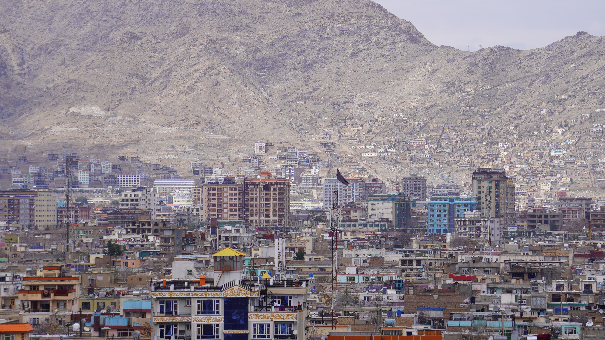
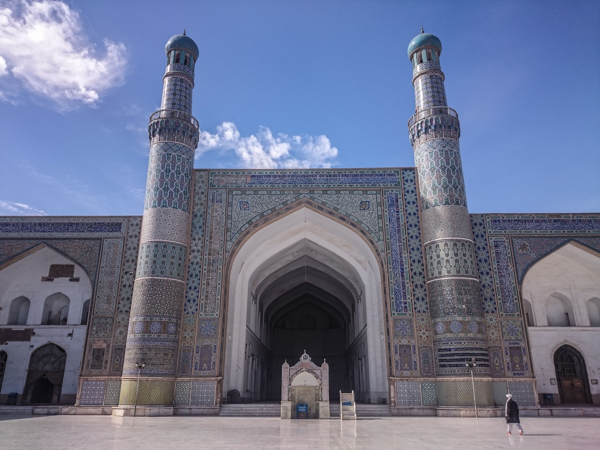

Discover Afghanistan
Explore landscapes, cities, and cultural heritage across three remarkable destinations.
Places With Stories to Tell
Afghanistan is home to diverse landscapes, historic cities, and cultural heritage shaped by centuries of history.
Explore three destinations and discover the different stories, landscapes, and traditions that make each place unique.
 01
01
Bamyan
A mountain valley known for its dramatic landscape, archaeological heritage, and ancient Buddhist sites.
Bamyan lies among the rugged mountains of central Afghanistan. Its cultural landscape contains important archaeological remains and reflects the region's long history.
The Bamyan Valley is internationally recognized for its archaeological and cultural heritage, including the remains of the monumental Buddha statues and surrounding cave complexes.
Discover Bamyan →
02Kabul
Afghanistan's capital, where historic places, cultural heritage, and modern city life come together.
Kabul is one of Afghanistan's most historic cities and has played an important role in the country's political and cultural history.
From historic gardens and old neighborhoods to busy streets and mountain views, Kabul offers a different perspective on Afghanistan's past and present.
Discover Kabul →
03Herat
A historic city known for its architectural heritage and important place in the cultural history of the region.
Herat has long been an important center of art, learning, trade, and architecture in western Afghanistan.
Its historic landmarks, traditional architecture, and artistic heritage reflect centuries of cultural development.
Discover Herat →Every Place Has a Story
Discover more places, stories, and heritage across Afghanistan.
Discover Our Story →